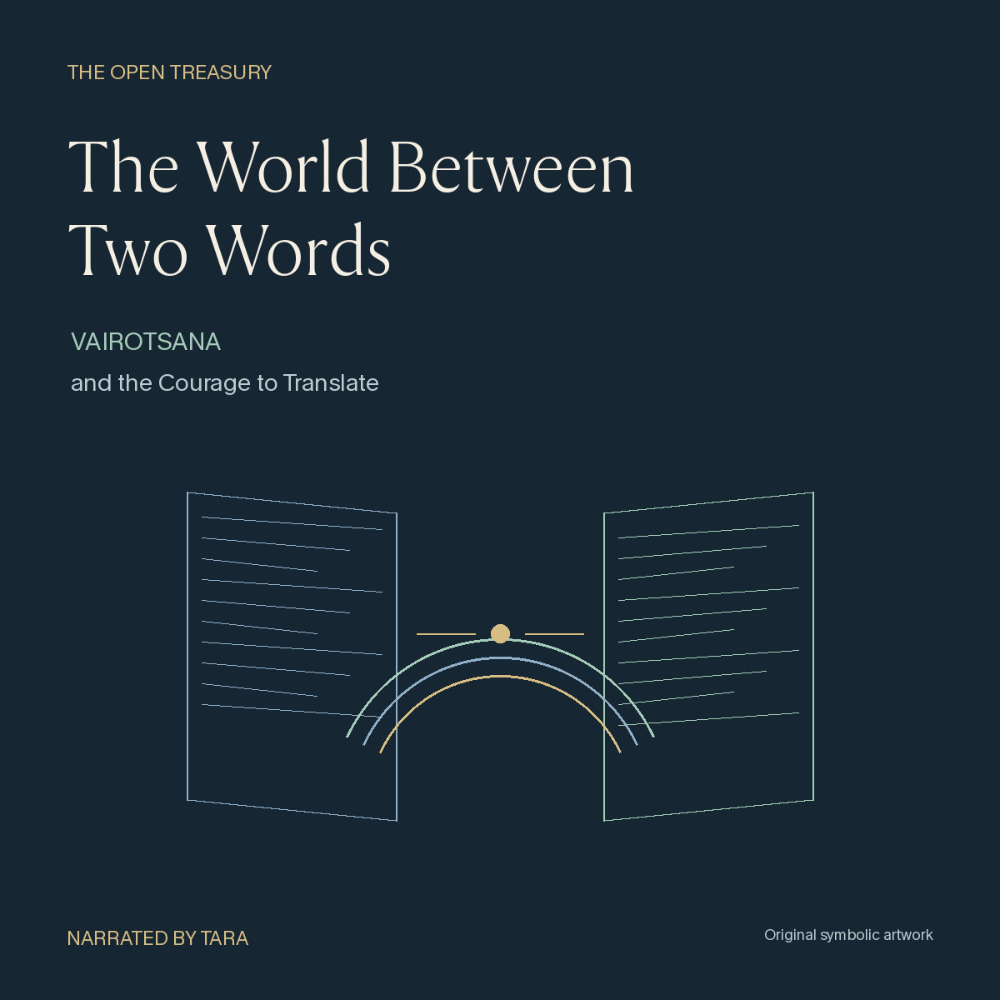

The World Between Two Words
Vairotsana and the Courage to Translate
A 24-chapter original course on Vairotsana: translation as collaboration, answerability, shared language, revision, female teachers, cultural brokerage, layered history and the courage to be corrected.
Moving visual edition
Watch or download the original 720p symbolic animation
Chapters
- 00:00 - The door someone held open
- 02:17 - One name, several worlds
- 04:19 - The grain of the archive
- 06:28 - The king needs other people
- 08:41 - More than one pair of hands
- 10:58 - A word is a small decision with a long future
- 13:16 - Making a shared language
- 15:41 - The people at the bottom of the page
- 17:47 - The credit that will not stay still
- 20:00 - The road to India
- 22:13 - Milk that becomes ink
- 24:37 - The translator who became inconvenient
- 26:47 - A woman interrupts the hero
- 29:00 - Nonduality does not cancel your debt
- 31:19 - The beard at the funeral
- 33:30 - Who gets to bury the king?
- 35:49 - A broker is not always a bridge
- 38:10 - India, China and the stories between them
- 40:26 - A text can remember more than one century
- 42:38 - The original that is no longer there
- 44:56 - Revision without humiliation
- 47:12 - Translate the person in front of you
- 49:27 - What cannot be handed over for you
- 51:42 - Leave the door open
Read alongside the course
Source companion PDF
Detailed sources and reading limits
Complete spoken script
Rights, narration and review
A sentence that reaches us opens a study of translation as shared responsibility. Vairotsana's remembered life leads through collaborative translation, vocabulary, canonical credit, revision, journey and exile, a female teacher, nonduality and ethics, a royal funeral contest, cultural brokerage and the courage to let another person correct us. The translator is distinguished from the Buddha Vairocana. The funeral contest is not the Samye debate.
Later sacred biography, a layered manuscript, canonical credits and modern analysis remain distinct. The companion identifies the exact sections read in scholarship and the open book Bringing Buddhism to Tibet. The Great Image commercial biography and Karmay's unseen chapter are bibliographical leads, not claimed readings. Different modern introductions' descriptions of Vairotsana's role are preserved rather than silently harmonized. Everyday examples and ethical applications are original commentary, not ancient quotations.
This course is study and reflection, not initiation or a manual for advanced Great Perfection, tantric, breath, gaze, subtle-energy or visualization practices. No listener is asked to surrender consent, remain in an unsafe relationship or treat a spiritual claim as exemption from ordinary responsibility.
Synthetic narration uses approximate English pronunciations. All 48 original clips received automated wording and signal checks. Nine uncertain clips received an independent second recognition pass, and one complete retake of clip 18 is selected. Original and alternate takes are kept untouched. Minor article, contraction or inflection variations may remain, including A count heard as accounts in clip 42. No full human-ear or native-pronunciation certification is claimed.
The listening copy uses fixed +2.5 dB gain and transparent oversampled peak limiting only, without changes to words, speed, pitch or EQ. The final MP3 measures -17.7 LUFS and -1.9 dBTP. Untouched originals and an untouched lossless whole-take master are retained separately. The 720p video uses original symbolic illustrations, not historical likenesses or source art. Frame rounding places the final visual ending about 1.3 seconds after the continuous audio; the narration itself has not been slowed or stretched.
CC0 covers only original commentary, synthetic narration and original symbolic artwork insofar as the creator holds rights. Third-party translations, editions and scholarship retain their own rights. Lotsawa House translations retain CC BY-NC 4.0. No source translation or scholarly PDF is recited or redistributed. No support, donation or commercial solicitation accompanies this course. The companion provides translator credits, source links and exact reading limits.
Got a question? Ask Tara - the best listener questions become short answer episodes.